Date-time
DATETIME · Date-time input field with a date box and a time box
What is a Date-time field?
- 1.1Adding a field and the property panel layout
1.1Adding a field and the property panel layout
Overview
Date-time (DATETIME) is an input box that records the date and the time together. Use it for items where the exact hour and minute matter, such as specimen collection date-time · dosing time · adverse event onset time. The biggest difference from the Date type is that the input is split into two boxes, a date box and a time box. If recording by the day is enough, use the Date type.
Screen guide
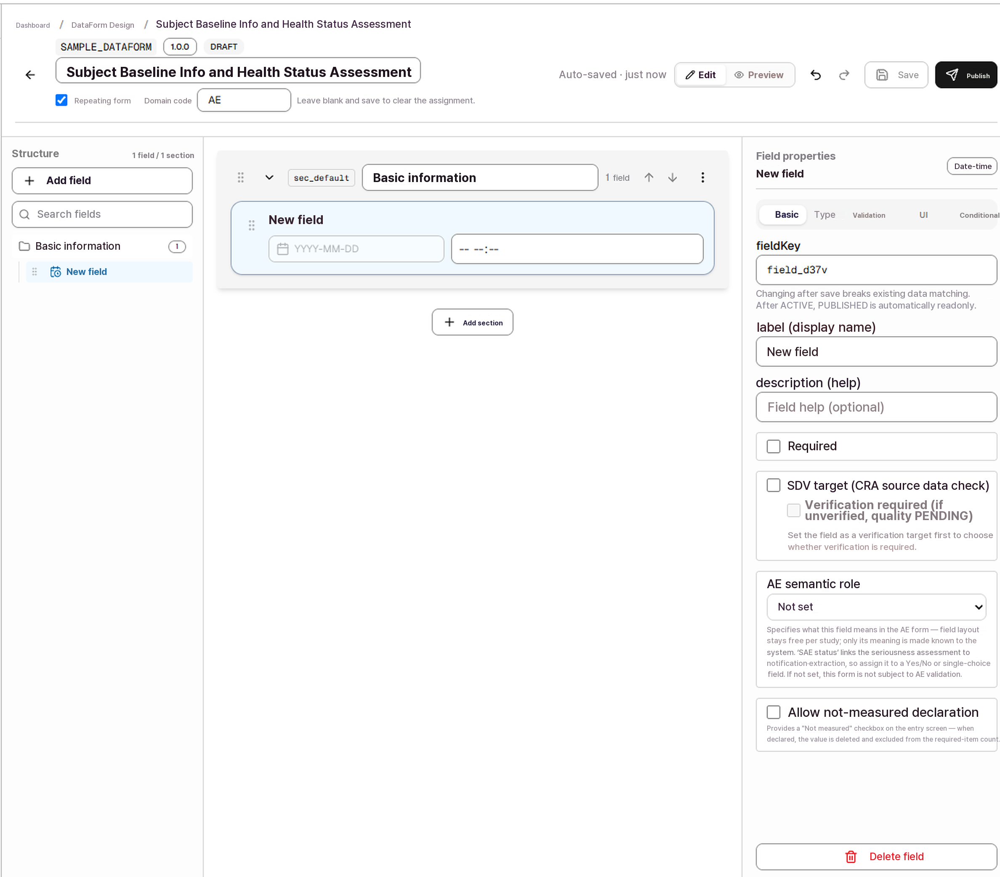
[+ Add field] — Specify the type here to create the field.
The new field is added to the structure tree.
The date box on the WYSIWYG canvas — shows the YYYY-MM-DD hint.
The time box — shows the -- --:-- hint. The two boxes form one field, and the value is also stored as one.
fieldKey — The actual key under which the value is stored. 2.1
label (display name) · description (help) — The name and supporting description shown on screen. 2.1
Required · SDV target · AE semantic role · Allow not-measured declaration — Each is explained in Chapter 2.
Type badge “Date-time” — The type of the selected field. It cannot be changed after the field is added.
5 property tabs — Basic · Type settings · Validation · UI · Conditional. Chapters 2–6 of this manual correspond to these tabs.
Precautions
Must check Data corruption · Form cannot be completed
- • “No entry before consent date”, which exists in the Date type, does not exist in this type. If an item needs the consent date gate, design it with the Date type, or set a lower limit with a value range in the validation rules Ch. 4.
- • The type cannot be changed after the field is added. If you chose the wrong type, delete the field and add it again. Decide between Date and Date-time by whether the time is used in analysis — collecting a time that will not be used only adds to the recorder's burden.
- • The structure cannot be changed after publishing (PUBLISH). If changes are needed during operation, publish a new version.
Basic tab — name · required · verification target · not measured
- 2.1fieldKey · display name · help
- 2.2Required
- 2.3SDV target (CRA source data check)
- 2.4Allow not-measured declaration
2.1fieldKey · display name · help
Overview
This area sets the field's names. The storage key (fieldKey) and the name shown on screen (label) are different values, and the point up to which each may be changed differs.
Screen guide
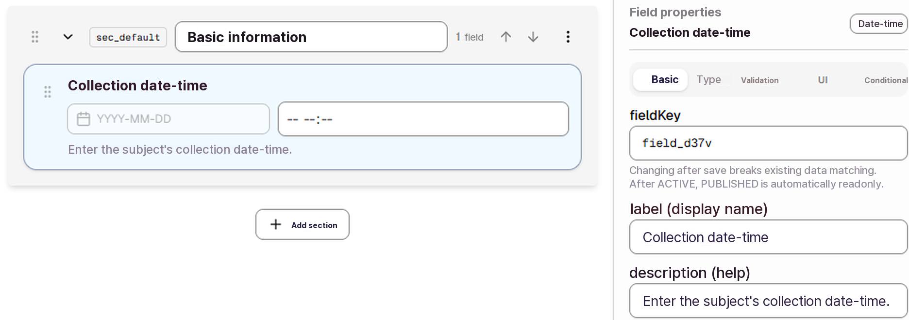
label (display name) — Enter the item name to show on the entry screen.
It is shown as the field title on the canvas.
description (help) — Enter a supporting description to show below the display name. If left blank, nothing is shown.
It is shown in gray text below the two input boxes.
fieldKey — The actual key under which the value is stored. When you add a field it is assigned automatically, like field_d37v, and can be changed using letters, digits and underscores. It is not shown on screen — be sure to read the precautions below.
Precautions
Must check Data corruption · Form cannot be completed
- • ⛔ Do not change the fieldKey after saving. As the on-screen notice says, “Changing after save breaks existing data matching” — values already entered are no longer linked to the new key and are effectively lost.
- • State in the help “which point in time the time refers to”. Depending on whether “Collection date-time” means the time collection started or ended, and whether “Dosing time” means the start or end time, each person recording will enter a different value. Times leave more room for interpretation than dates, so they must be described more clearly.
- • Once the form becomes PUBLISHED after ACTIVE, the fieldKey input becomes read-only automatically. The system prevents changes only from that point on, so until then users must take care themselves.
Easily misunderstood behavior
- • The display name can be changed safely at any time, because it is on-screen text, not the storage key.
2.2Required
Overview
Sets whether this item must be entered. When selected, saving is blocked on the entry screen if no date-time has been specified.
Screen guide
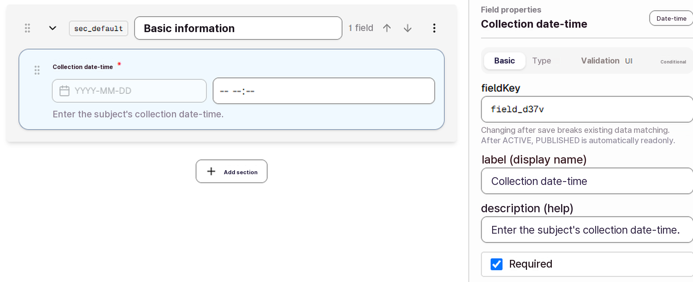
Required — When selected, this field becomes required.
A red asterisk (*) appears to the right of the display name on the canvas, telling users that the field is required.
Precautions
Must check Data corruption · Form cannot be completed
- • ⛔ Be careful with items where the time is often unknown. People often remember the date but not the time. Unless the time is essential for analysis, switching to the Date type is better for record quality. If it is essential, allow the not-measured declaration 2.4.
- • Filling in only one of the two boxes does not complete the value. If you pick only the date and leave the time empty, the date-time is not fixed, so if the field is required, both boxes must be filled in.
- • Fields hidden by conditional display are exempt from required validation. Ch. 6 Hiding in the UI tab, by contrast, does not exclude them, so do not confuse the two. 5.3
Note
- • The required setting is used for the form completion check.
2.3SDV target (CRA source data check)
Overview
SDV (Source Data Verification) is the procedure in which the clinical research associate (CRA) checks entered values against the site's source data. Here you decide whether this field is a target of that procedure. This setting is the same for all field types, so the screen is also the same regardless of type.
Screen guide


SDV target (CRA source data check) — When selected, this field is included in the CRA's check list.
When it becomes selected, the sub-item is enabled.
Verification required (if unverified, quality PENDING) — Can be set only after ① is selected. When selected, the quality status of the data stays at PENDING until the CRA finishes the check.
Before ① is selected, ② is grayed out and disabled. As the on-screen notice says, “Set the field as a verification target first to choose whether verification is required.”
Precautions
Must check Data corruption · Form cannot be completed
- • For items that include a time, check in advance which source data will be used for the check. Dates remain in most records, but source data that also keeps the time is limited (specimen labels · dosing records, etc.). If the source data has no time, the CRA has nothing to check against.
- • Changing a value clears its verification. Even correcting the time by a few minutes returns the quality status to PENDING, and the CRA must check it again.
Easily misunderstood behavior
- • SDV cannot be performed by the person who entered the data. The system enforces cross-verification (Cross-User SoD), so the person entering and the person verifying must be different.
Note
- • The quality status progresses in the order PENDING → VERIFIED → CLEAN. If even one field marked verification required is unverified, the data cannot become CLEAN.
2.4Allow not-measured declaration
Overview
This feature records, as a value, the case where the date-time cannot be confirmed. If left blank, “not entered yet” cannot be distinguished from “checked, but the time is unknown”. This declaration tells the two apart.
Screen guide
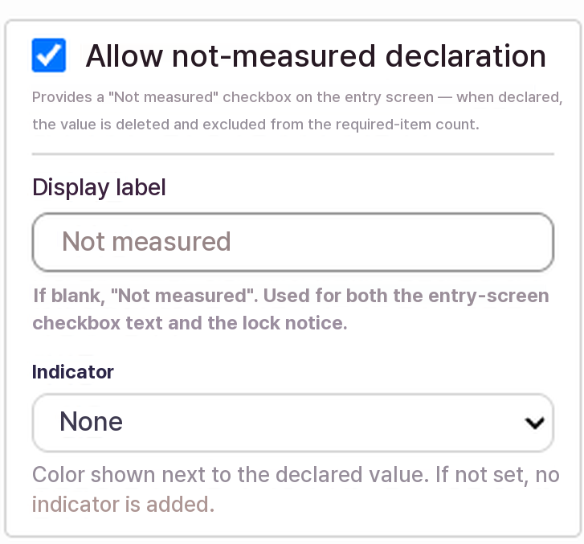
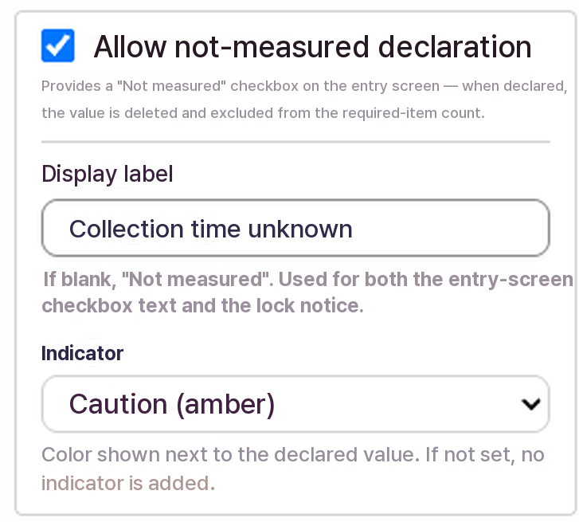
Allow not-measured declaration — When selected, a “Not measured” checkbox is created on the entry screen and the two items below appear.
Display label — If left blank, the default “Not measured” is used.
If you change it to Collection time unknown, this text is applied to both the entry-screen checkbox and the lock notice.
Indicator — The default is None.
If you change it to Caution (amber), a mark in that color appears next to the declared value.
Precautions
Must check Data corruption · Form cannot be completed
- • ⛔ Do not fill in an unknown time with an arbitrary time. If you enter “00:00” or “12:00” instead, it cannot be distinguished from real records and cannot be filtered out in analysis. Data with an abnormally large number of midnight records usually results from this.
- • Declaring deletes the value. As the on-screen notice says — “When declared, the value is deleted and excluded from the required-item count.”
Easily misunderstood behavior
- • This feature is used especially often in this type. The date is often known while only the time is unknown, but because you cannot fill in just one of the two boxes, the whole value ends up empty. Recording a declaration in that case distinguishes it from “not recorded”.
Note
- • If no indicator is set, no color mark is applied. If emphasis is needed, select Caution (amber) or another option.
Type settings tab — display format and date-time range
- 3.1Type settings tab layout
- 3.2Display format · allowed input range (format · min · max)
- 3.3Default value (defaultValue)
3.1Overall layout
Overview
This tab sets in what format the date-time is displayed and up to which range it is accepted. The items are the same as in the Date type, but min · max are each split into two boxes (date · time).
Screen guide
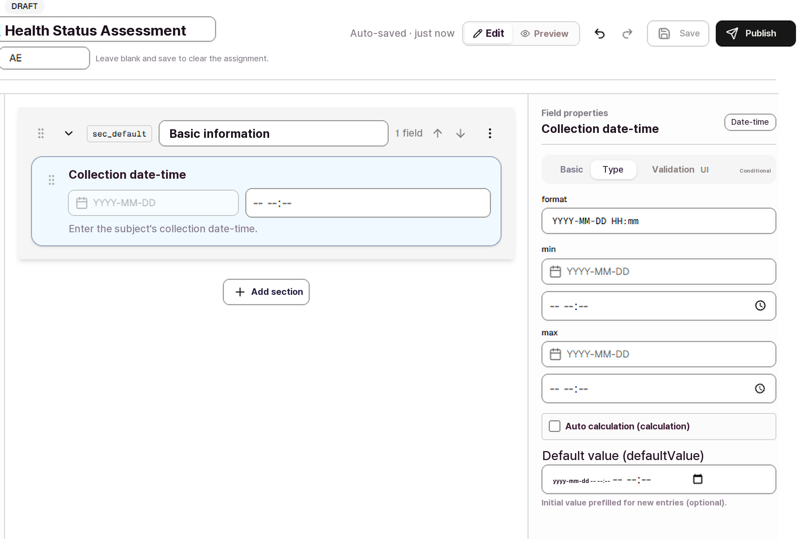
format — The format in which the date-time is displayed on screen. Choose one of three. 3.2
min — The earliest date-time that can be entered. Specify it in the date box and the time box separately. 3.2
max — The latest date-time that can be entered. It also has two boxes. 3.2
Auto calculation (calculation) — The item is shown, but it is not used in this type. It is a feature that computes numbers from other field values, so use it in the Number type.
Default value (defaultValue) — A date-time prefilled for new entries. 3.3
Precautions
Must check Data corruption · Form cannot be completed
- • min · max are the “blocking” axis. Date-times outside the range are not saved. However, the range is not shown on the canvas, so users only learn why they were blocked at the saving stage — inform them in advance with helpText. 5.4
- • This screen has no time zone (timezone) setting. In studies with sites in several countries where times must be compared, define in the protocol and SOP which time zone times are recorded in, and inform users with helpText. 5.4
Easily misunderstood behavior
- • The faint
YYYY-MM-DD·-- --:--in the input boxes are input examples, not set values. If min · max are left blank, no range limit applies.
Note
- • The layout of this tab is fixed by the type selected when the field was created. If the type differs, the items in this tab also differ.
3.2Display format · allowed input range (format · min · max)
Overview
Sets in what format the date-time is displayed and up to which range it is accepted. format is how it looks, and min · max decide whether it can be saved.
Screen guide
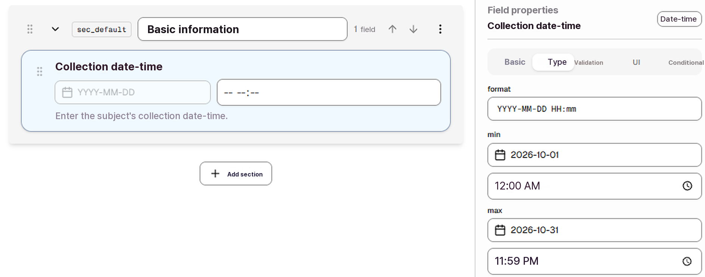
format — The date-time display format. Select one of three. (See ‘D.’ below) The capture shows YYYY-MM-DD HH:mm.
min — The earliest date-time that can be entered. Specify the date box (2026-10-01) and the time box (12:00 AM) separately.
max — The latest date-time that can be entered. The capture uses 2026-10-31 11:59 PM, allowing up to the last moment of October.
Precautions
Must check Data corruption · Form cannot be completed
- • ⛔ Do not mix formats within one project. If some forms separate date and time with a space and others with
T, exported data becomes hard to handle at once. Use a single format across the whole project. - • The time picker shows AM/PM, but format uses 24-hour notation.
11:59 PMin the capture is23:59in formatHH:mm. The notation differs between picking and display, so tell recorders in advance. - • min · max are not shown on the canvas. They cannot be checked on screen and are enforced only at the saving stage. 3.1
- • Do not leave out the time when setting the end of the range. If the time box of max is set to
12:00 AM(midnight), that whole day is left out — set it to11:59 PM, as in the capture, to include that day.
Easily misunderstood behavior
- • First decide whether seconds (ss) are needed. Collecting seconds increases the recording burden, and if the source data has no seconds, SDV checking is impossible. 2.3
Available formats
| format | Example | Where to use |
|---|---|---|
YYYY-MM-DD HH:mm | 2026-10-06 14:30 | General records where minutes are enough · recommended |
YYYY-MM-DD HH:mm:ss | 2026-10-06 14:30:05 | Records that need seconds (specimen processing, etc.) |
YYYY-MM-DDTHH:mm:ss | 2026-10-06T14:30:05 | ISO 8601 notation — when linking with external systems |
3.3Default value (defaultValue)
Overview
A date-time prefilled when a new entry starts. For this type the result cannot be checked on the edit screen, so you must switch to [Preview].
Screen guide
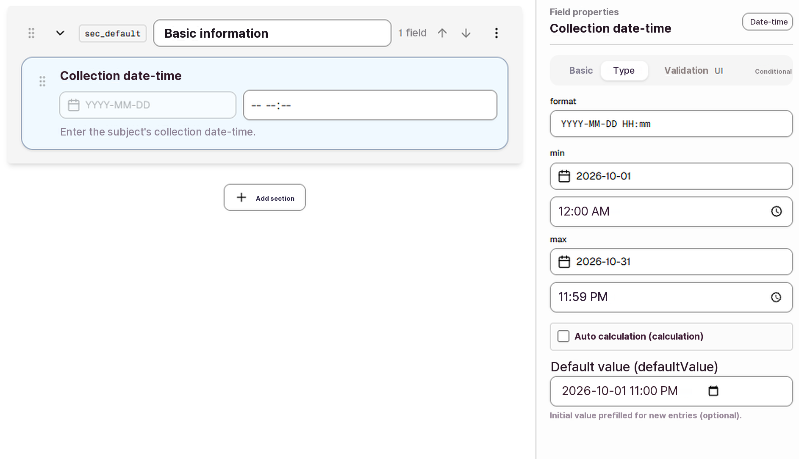
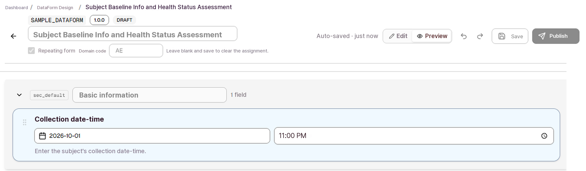
Default value (defaultValue) — Specify the date-time to prefill for new entries. (Optional)
The edit screen canvas still shows only the hint text. This is not because the setting failed, but because the edit screen does not draw the default value.
[Preview] — Switch to Preview at the top.
2026-10-01 is in the date box.
11:00 PM is in the time box as well. Check here that both boxes are filled in.
Precautions
Must check Data corruption · Form cannot be completed
- • ⛔ Do not set a default value for measurement date-time items. If values that must differ case by case, such as specimen collection time, contain a default value, unchecked times are saved as is. Times look plausible, so wrong values are hard to notice.
- • The default value must also satisfy the min · max range 3.2. A default value outside the range is blocked at the saving stage.
Easily misunderstood behavior
- • Do not conclude that the setting failed by looking only at the edit screen. For this type, the default value does not appear on the edit screen canvas — always check it in [Preview].
- • The default value applies only to newly created entries. Data already saved is not changed.
Validation tab — checking values before saving
- 4.1No validation rules
- 4.2Adding a rule
- 4.3Completed rule
4.1No validation rules
Overview
This tab collects rules that check whether a date-time meets conditions before it is saved. Use it instead of min · max in Type settings Ch. 3 when you want to define the message shown on violation yourself. As with the Date type, only the Value range rule is used.
Screen guide
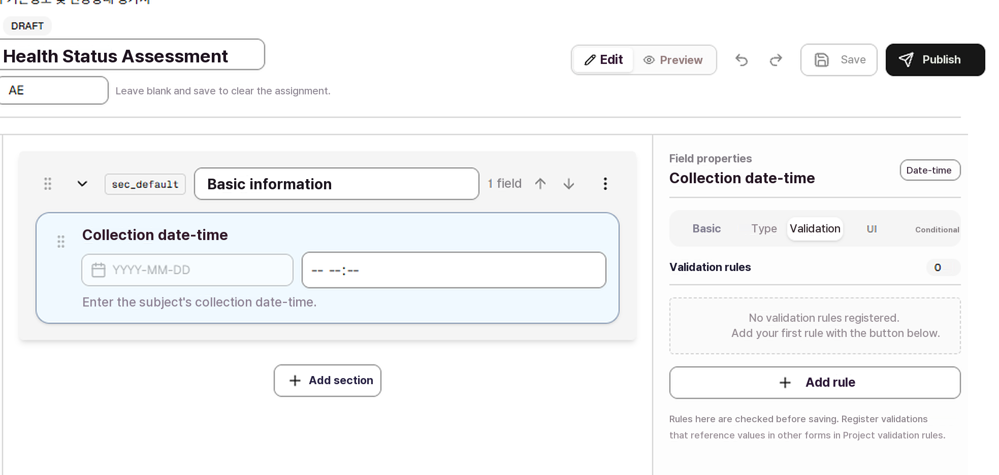
[+ Add rule] — Creates the first rule. The screen after selecting it is explained in 4.2.
The Validation rules area and the number of registered rules. Initially it is 0 items.
When there are no rules, the notice “No validation rules registered. Add your first rule with the button below.” is shown.
Notice at the bottom — “Rules here are checked before saving. Register validations that reference values in other forms in Project validation rules.”
Precautions
Must check Data corruption · Form cannot be completed
- • ⛔ Comparisons between date-times, such as “whether the dosing time is after the collection time”, cannot be created here. Register validations that reference values in other forms on the “Project validation rules” screen. This tab covers only checks completed within the same form.
Easily misunderstood behavior
- • In many cases min · max in Type settings are enough. There is no need to apply the same range check in two places. 3.2
- • You can create multiple rules, and a value is saved only if it satisfies all active rules.
4.2Adding a rule
Overview
Selecting [+ Add rule] in 4.1 creates a Rule 1 block. The rule type used in Date-time fields is Value range — the min · max boxes appear as pickers that take the date and time together.
Screen guide
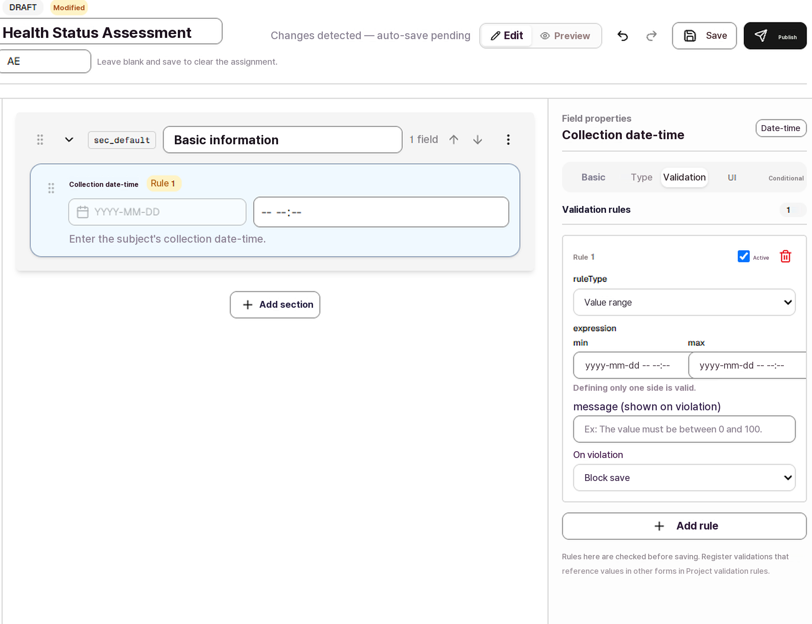
[+ Add rule] — Creates one more rule. (It is the same button you selected in 4.1.)
The “Rule 1” block is created, and a “Rule 1” badge appears next to the display name on the canvas.
The number of rules changes to 1 item.
Active checkbox and Delete icon — You can pause a rule without deleting it.
ruleType — The type of rule. In this type, use Value range.
min — The start date-time of the range. Enter it in the form yyyy-mm-dd -- --:--.
max — The end date-time of the range.
The faint text and “Ex: The value must be between 0 and 100.” are input examples, not set values. As the on-screen notice says, “Defining only one side is valid.”
message (shown on violation) — The message shown to users when the rule is violated.
On violation — Select either Block save or Warning.
Precautions
Must check Data corruption · Form cannot be completed
- • If message is left blank, users cannot tell why saving was blocked. Be sure to enter it.
- • This rule applies together with the range limit in Type settings 3.2, so if you specify conflicting ranges, no date-time can be saved.
Easily misunderstood behavior
- • The example text in message is shown for numbers. It is only an example, so enter a message suited to date-times yourself. 4.3
- • The practical standard is Block save for impossible date-times and Warning for rare but possible date-times.
4.3Completed rule
Overview
This is the state after filling in all the empty items from 4.2. With this setting, specifying a date-time outside October 2026 blocks saving and shows the specified message.
Screen guide
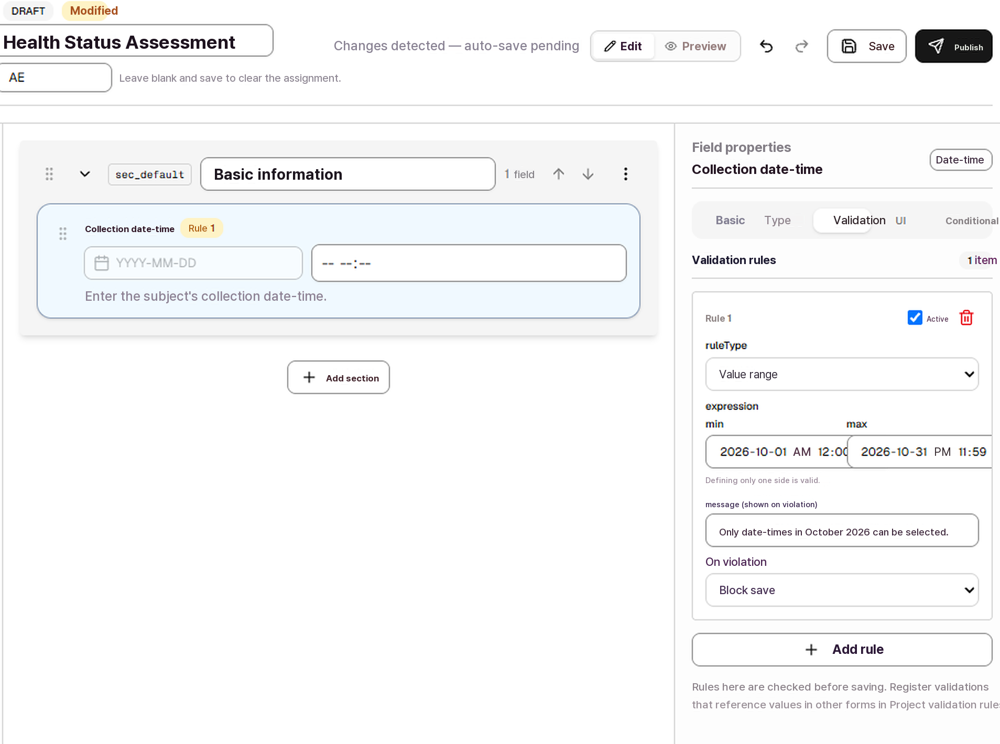
ruleType = Value range — A rule that checks the earliest and latest boundaries of the date-time.
min = 2026-10-01 12:00 AM — The start date-time of the range. Allowed from midnight.
max = 2026-10-31 11:59 PM — The end date-time of the range. Allowed up to the last minute of that day.
On-screen notice — “Defining only one side is valid.” The rule works correctly even if only one side is specified.
message = Only date-times in October 2026 can be selected. — The allowed range is stated as is so that users know what to correct.
On violation = Block save — The value is not saved until the condition is met.
Precautions
Must check Data corruption · Form cannot be completed
- • Specify the time exactly at both ends of the range. As in the capture, set the start to 12:00 AM (midnight) and the end to 11:59 PM so that the whole period is included. If the end is set to midnight, the entire last day is left out. 3.2
- • State the allowed range as is in message. For date-times the range is not shown on screen, so this message is the only guidance. 3.2
Easily misunderstood behavior
- • The value may be too long to show in full in the input box, because the date and time go into one box — the max box in the capture also appears cut off at the end. Click the box before saving to check the full value.
- • Type settings Ch. 3 and validation rules Ch. 4 both apply together. If either one is not met, the value is not saved.
UI tab — screen layout and guidance text
- 5.1UI tab layout
- 5.2Layout width
- 5.3Read-only · hidden
- 5.4placeholder · helpText
5.1Overall layout
Overview
This tab sets how the field is laid out and explained on screen, not the value itself. Settings in this tab do not change the stored data itself. However, Hidden only hides the field on screen and does not exclude it from the required-item count, so check 5.3 before using it.
Screen guide
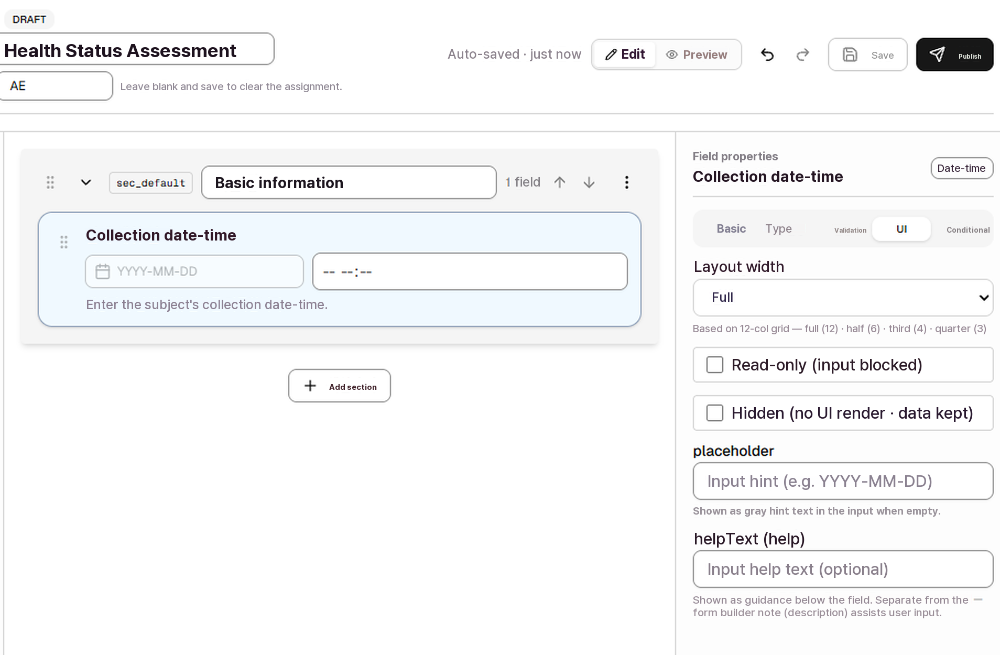
Layout width — The width this field takes up in a row. The meaning of the options is given in the notice right below: “Based on 12-col grid — full (12) · half (6) · third (4) · quarter (3)”. 5.2
Read-only (input blocked) — Shows the field but prevents editing. 5.3
Hidden (no UI render · data kept) — Hides the field from the screen. 5.3
placeholder — Gray hint shown inside the input box when there is no value. 5.4
helpText (help) — Guidance text shown below the field. 5.4
Precautions
Must check Data corruption · Form cannot be completed
- • ⛔ In this type, reducing the width cuts off the boxes. Because there are two input boxes, at a narrow width the date box is cut off like
YY…and becomes unreadable. Full is recommended. 5.2 - • None of the limits are visible on screen. The range limit 3.2 · validation rules Ch. 4 · time zone basis either work only when saving or have no setting at all, so unless helpText tells users in advance, they are blocked without knowing why. 5.4
Easily misunderstood behavior
- • The faint
Input hint (e.g. YYYY-MM-DD)·Input help text (optional)in the input boxes are input examples, not set values.
Note
- • By default, Layout width = Full, and Read-only · Hidden are cleared.
5.2Layout width
Overview
Select the width this field takes up on the 12-column grid, which divides a row into 12 columns. This type is the most vulnerable to width reduction — because one field contains two input boxes.
Screen guide
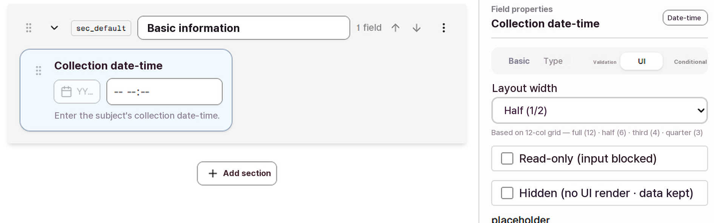
YY…Layout width — Specify the width from the selection list. The example is Half (1/2).
As both boxes shrink together, the hint text in the date box is cut off as YY…. Users can no longer tell what format to enter.
Precautions
Must check Data corruption · Form cannot be completed
- • ⛔ Use full width for Date-time fields. As the capture shows, even half width cuts off the hint text. The Date type has one box, so half width is fine, but this type must fit two boxes into the same width, so the situation is different.
Easily misunderstood behavior
- • If you must reduce the width, keep the placeholder short. However, this is not a fundamental solution, and it is safer to put the guidance in helpText. 5.4
- • When you reduce the width, the next field is placed on the same row. If the total in a row exceeds 12, the field moves to the next row.
Note
- • On devices with a narrow screen, fields may be stacked one per row regardless of this setting.
Width options
| Option | Columns used | For Date-time |
|---|---|---|
| Full | 12 | Both boxes fully visible — recommended |
| Half (1/2) | 6 | Date box hint cut off (capture) |
| Third (1/3) | 4 | Both boxes hard to read |
| Quarter (1/4) | 3 | Practically unusable |
5.3Read-only · hidden
Overview
Makes the field non-editable or not displayed. In both cases the stored date-time is preserved as is.
Screen guide
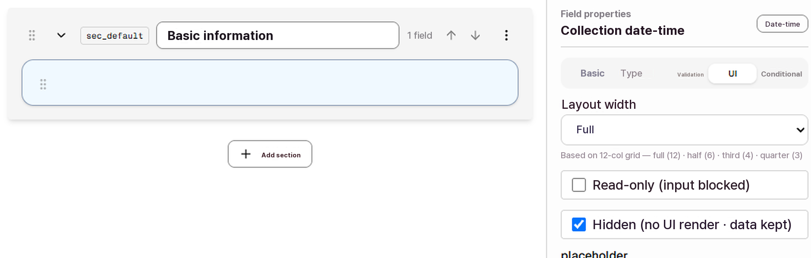
Read-only (input blocked) — The date-time is shown, but users cannot change it. (Cleared in this capture)
Hidden (no UI render · data kept) — The field is not shown on the entry screen. Values already saved are not deleted.
The field disappears from the canvas, and the section looks empty. Both boxes disappear together.
Precautions
Must check Data corruption · Form cannot be completed
- • ⛔ Do not hide required items. Hiding in the UI tab only hides the field on screen and does not exclude it from the required-item count — an item users cannot fill in stays in the count, and the form can no longer be completed.
- • Hiding does not delete data. The field only disappears from the screen; to delete the value, you must delete the field.
Easily misunderstood behavior
- • This differs from hiding in the Conditional tab. Fields hidden because the condition is not met are excluded from the required-item count Ch. 6. Both use the word “hidden”, but they are handled in exactly opposite ways in validation, so tell them apart.
- • Read-only and Hidden are different. Read-only means “shown but not editable”; Hidden means “not shown”. If users need to see a date-time recorded by the system, use Read-only.
Note
- • Even when hidden, the field remains in the Structure panel — you can select it again and revert the setting.
5.4placeholder · helpText
Overview
Two kinds of text that tell users which date-time to specify. In this type, helpText is practically the only means of guidance — because neither the range limit nor the time zone basis appears on screen.
Screen guide
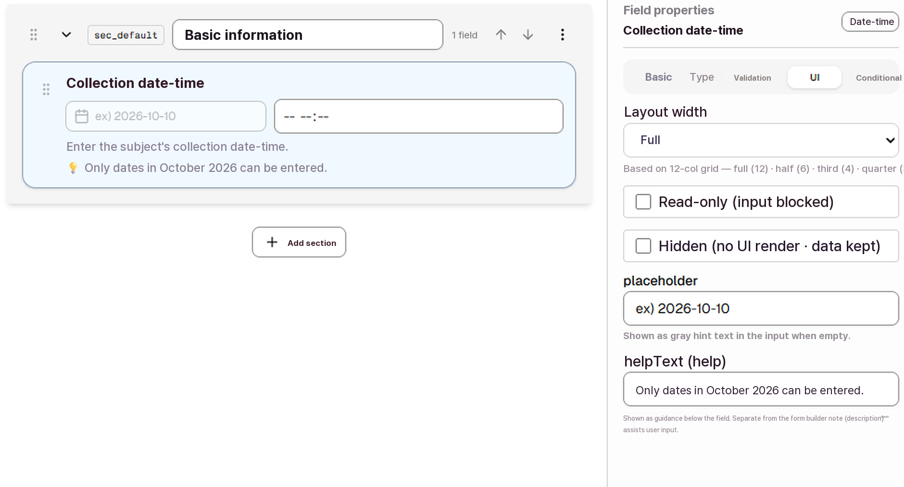
placeholder — Enter the hint text to show inside the input box. The capture uses ex) 2026-10-10.
It is shown in gray inside the date box. It disappears when the user picks a date.
⚠ The time box does not change. The placeholder applies only to the date box, and the time box keeps the -- --:-- hint.
helpText (help) — Enter the guidance text to show below the field. The capture uses Only dates in October 2026 can be entered to state the allowed range.
It is shown below the field with a light bulb icon (💡). It does not disappear even after a date-time is specified.
Precautions
Must check Data corruption · Form cannot be completed
- • ⛔ Put the guidance in helpText. The placeholder does not apply to the time box, disappears once a value is picked, and is cut off when the width is reduced 5.2. With these three weaknesses combined, it cannot serve as guidance for Date-time.
- • What to write in helpText — ① the allowed range 3.2 ② the time zone basis (no setting on screen · 3.1) ③ that times are picked as AM/PM but displayed in 24-hour notation 3.2 ④ whether it is to the minute or to the second.
Easily misunderstood behavior
- • description and helpText are different items. As the on-screen notice says, helpText is “Separate from the form builder note (description) — assists user input”. If both are entered, both lines are shown.
Conditional tab — showing a field based on another value
- 6.1Enabling conditional display
- 6.2Setting the condition
6.1Enabling conditional display
Overview
This feature shows or hides this field depending on the value of another field. Use it for branching, such as asking for the collection date-time only when “Specimen taken = Yes” — subjects to whom it does not apply are not shown two boxes they cannot fill in.
Screen guide
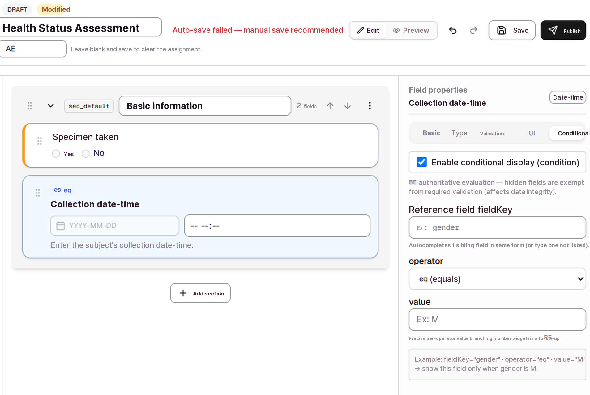
Enable conditional display (condition) — When selected, the condition settings below appear.
A 🔗 eq badge appears above the field on the canvas to show that a condition is applied.
⚠ On-screen notice — “Hidden fields are exempt from required validation (affects data integrity).” The condition is evaluated by the system.
Reference field fieldKey — Another field in the same form on which the condition is based. Sibling fields in the same form are autocompleted, and you can also type a value not in the list.
operator — The comparison method. The default is eq (equals).
value — The value to compare with.
Example at the bottom — fieldKey="gender" · operator="eq" · value="M" → show this field only when gender is M.
Precautions
Must check Data corruption · Form cannot be completed
- • Setting a condition can exempt a field from required validation. While a field is hidden because the condition is not met, the form is completed with that field empty even if it is required. This is intended behavior, not a defect.
Easily misunderstood behavior
- • This is the typical use of “asking for the date-time only when it was performed”. It prevents subjects for whom it was not performed from being made to leave the two boxes empty or enter an arbitrary time. 2.2 · 2.4
- • “Auto-save failed — manual save recommended” at the top of the capture is a notice shown when auto-save fails temporarily. In that case, press [Save] to save manually.
Note
- • If you enable the condition and leave the reference field blank, the condition is never met. Be sure to fill in all of ②–④. 6.2
6.2Setting the condition
Overview
This is the state after the condition enabled in 6.1 has been fully entered. With this setting, this Date-time field is shown on the entry screen only when the value of the “Specimen taken” field is 1 (Yes).
Screen guide
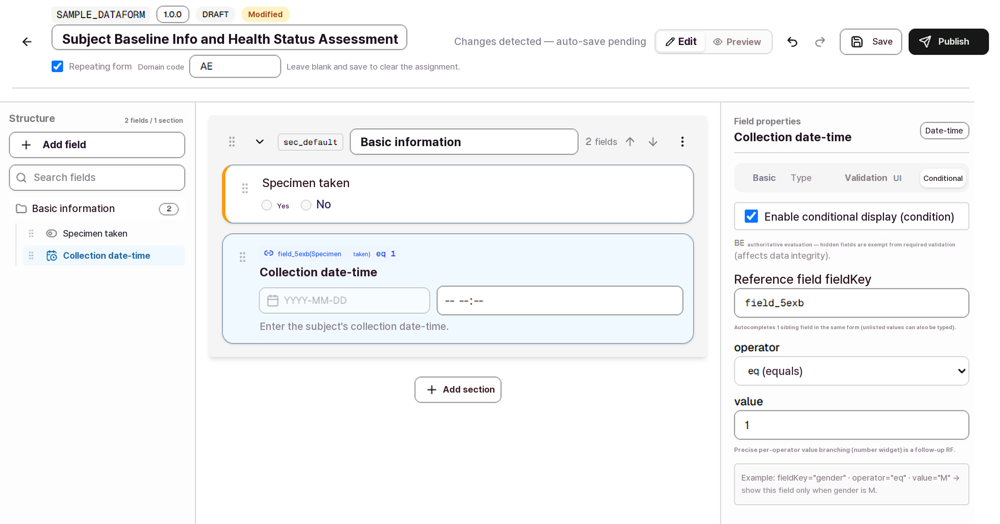
Specimen taken is 1Reference field fieldKey = field_5exb — Points to the “Specimen taken” field in the same form.
operator = eq (equals)
value = 1 — Enter the value stored for that option, not the “Yes” shown on screen.
Result of entering all of ①–③ — the canvas badge becomes specific: 🔗 field_5exb(Specimen taken) eq 1.
The referenced “Specimen taken” field must be in the same form; you can check it in the structure tree.
Example at the bottom — fieldKey="gender" · operator="eq" · value="M" → show this field only when gender is M.
Precautions
Must check Data corruption · Form cannot be completed
- • ⛔ In value, enter the stored value, not the on-screen text. In the capture the referenced field appears as Yes / No, but the actual stored value is
1. If you enter “Yes”, the condition is never met and this field is never shown. - • Using a date-time field as the basis of a condition is not recommended.
eqis met only when the values are exactly the same down to the minute, so it practically never matches. To use one as a basis, add a separate choice field such as “Performed or not”. - • Changing or deleting the fieldKey of the reference field breaks the condition. Conditions are linked by fieldKey, not by display name. 2.1
Note
- • Using conditions makes forms shorter and reduces unnecessary input. However, conflicting conditions create fields that are never shown, so always check in Preview after setting them.
Appendix
- 7.1Settings at a glance
7.1Date-time field settings at a glance
Settings by tab
| Tab | Item | What it sets | Section |
|---|---|---|---|
| Basic | fieldKey | The actual key under which the value is stored (do not change after saving) | 2.1 |
| label (display name) | Item name shown on screen | 2.1 | |
| description (help) | Supporting description below the display name — which point in time the time refers to | 2.1 | |
| Required | Whether it must be entered (both boxes must be filled in) | 2.2 | |
| SDV target | Whether it is a CRA source data check target · whether verification is required | 2.3 | |
| AE semantic role | What this field means in the AE form | ※ | |
| Allow not-measured declaration | Whether “date-time unknown” can be recorded as a value · display label · indicator | 2.4 | |
| Type settings | format | 3 display formats — HH:mm / HH:mm:ss / ISO (T) | 3.2 |
| min · max | Allowed date-time range — each with a date box + time box | 3.2 | |
| Default value (defaultValue) | Date-time to prefill — visible only in Preview | 3.3 | |
| Auto calculation | Not used in this type | 3.1 | |
| Validation | ruleType | Rule type — only Value range is used | 4.2 |
| expression (min · max) | Start · end date-time (specifying only one side is allowed) | 4.3 | |
| message | Message shown on violation — state the allowed range as is | 4.3 | |
| On violation · Active | Block save / Warning · rule active · inactive | 4.2 | |
| UI | Layout width | Width on the 12-col grid — Full recommended (two boxes get cut off) | 5.2 |
| Read-only | Shown but not editable | 5.3 | |
| Hidden | Not shown on screen (stored value kept · still counted as required) | 5.3 | |
| placeholder · helpText | The placeholder applies only to the date box — put guidance in helpText | 5.4 | |
| Conditional | Condition active | Whether conditional display is used (exempt from required validation) | 6.1 |
| Reference field fieldKey | Field in the same form on which the condition is based | 6.2 | |
| operator · value | Comparison method and value to compare (enter the stored value) | 6.2 |
Must remember
Must check Data corruption · Form cannot be completed
- • Use Full for the layout width. One field has two input boxes, so even at half width the date box hint is cut off as
YY…. 5.2 - • Do not leave out the time at the end of the range. If max is set to midnight, the entire last day is left out — set it to
11:59 PM. 3.2 · 4.3 - • Do not fill in an unknown time with 00:00 or 12:00. It cannot be distinguished from real records — use the not-measured declaration. 2.4
- • Put the guidance in helpText. The placeholder does not apply to the time box and is cut off when the width is reduced. 5.4
- • Do not set a default value for measurement date-times. Unchecked times are saved looking plausible. 3.3
Easily misunderstood behavior
- • The time picker uses AM/PM, but format uses 24-hour notation.
11:59 PM=23:59. 3.2 - • The default value does not appear on the edit screen. It can be checked only in [Preview]. 3.3
- • There is no time zone setting. For multinational studies, define the reference time zone in the protocol and inform users with helpText. 3.1 · 5.4
Not covered in this document
※ AE semantic role — It is on the Basic tab, but there is no capture of the setup process, so it has no separate section. Set it only in projects that use the adverse event (AE) form; for details, refer to the AE documentation.
No entry before consent date — This item does not exist at all in this type. It is exclusive to the Date (DATE) type, so for items that need the consent date gate, design them with the Date type or set a lower limit with a value range in the validation rules. 1.1
Auto calculation (calculation) — The item is shown on the Type settings tab but is not used in this type. It calculates numbers from other field values, so use it with the Number type. 3.1
Validation rule types other than Value range — The only type used in this type is Value range. Validations that compare with other date-times (e.g. whether the dosing time is after the collection time) are registered on the “Project validation rules” screen. 4.1